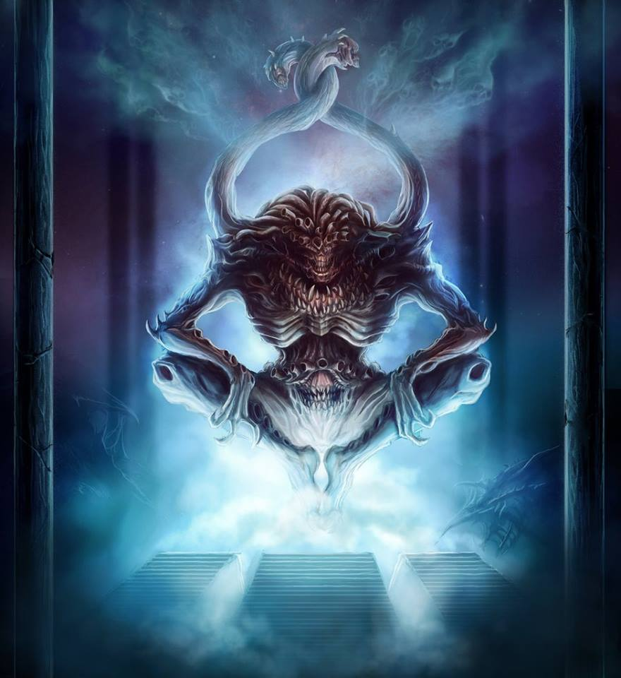

Chaos
Tzeentch
About Tzeentch
The Changer of Ways and Architect of Fate, Tzeentch is the Chaos God of change, hope, ambition, sorcery and scheming. His plots are so complex that even failure may be part of his plan.
Lore
- Tzeentch dwells within the Crystal Labyrinth, an ever-shifting maze within the Warp.
- The Thousand Sons Legion, led by the Daemon Primarch Magnus the Red, serves Tzeentch.
- Ahriman's Rubric of Ahriman turned most of the Thousand Sons into dust-filled suits of armor.
- Tzeentch is the opposite of Nurgle, since change opposes stagnation.
- His followers are often sorcerers seeking forbidden knowledge or power.
Playstyle & Goals
Psychic and ranged warfare built around sorcery and trickery. Tzeentchian forces rely on powerful psykers, warpfire and manipulation of fate. In a roleplay setting they suit schemers, sorcerers, manipulators and ambitious characters seeking knowledge at any price.
Goals
- Gain forbidden knowledge and secrets
- Manipulate events and people across the galaxy
- Bring change and upheaval to stable systems
- Ascend to daemonhood through mastery of sorcery
Types of Troops
- Thousand Sons: The Traitor Legion of sorcerers devoted to Tzeentch.
- Rubric Marines: Soulless warriors bound in armor, firing warpflame bolts.
- Scarab Occult Terminators: Elite Terminator-armored Rubricae.
- Sorcerers: Powerful psykers who command the Warp.
- Pink and Blue Horrors: Lesser daemons who split apart when slain.
- Flamers of Tzeentch: Daemons who spew multi-colored warpfire.
- Screamers: Flying shark-like daemons that soar through the Warp.
- Lords of Change: Greater Daemons of Tzeentch, bird-like masters of sorcery.
- Tzaangors: Beastman-like mutants devoted to Tzeentch.